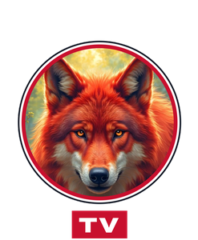

Yarın tekrar izleyebilirsin. Ebeveynin süreyi uzatabilir.
Nasıl kurmak istersiniz?
Bu kodu yakınınıza söyleyin:
Kod alınıyor…
Servis sağlayıcınızın verdiği sunucu adresi, kullanıcı adı ve şifreyle giriş yapın. Afişler, konular ve yayın akışı otomatik gelir.
M3U veya M3U8 listenizi dosya, bağlantı ya da metin olarak ekleyin. Canlı kanallar, filmler ve diziler otomatik ayrılır.
Yalnızca izleme hakkınız olan yayın listelerini kullanın.
Bir ad yazın, örneğin "Ayşe Teyze" ya da "Salon TV". Aile yöneticiniz size bu adla mesaj gönderebilir.
Telefonunuzun kamerasıyla bu kodu okutun ve açılan sayfaya bilgileri yazın. Telefon ile TV aynı Wi-Fi ağında olmalı.